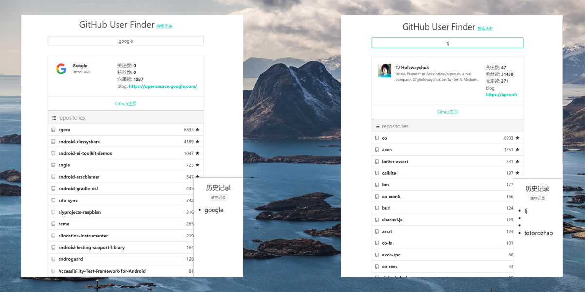

赵晶晶
意向职位 WANT JOB
前端开发 FRONT-END WEB DEVELOPER
经历 EXPERIENCE
梓如商务旅行服务集团股份有限公司 2020.5 - 至今
* 目前维护三个项目包括H5，PC，后台管理。其中H5项目大概100个页面，基于 vue+vue-router+vuex+少量vux组件进行开发，通过理解业务需求和团队的技术特点，专门针对公司量身定制轮子，如通用日历组件，定制弹框提示等，提升团队效率。
* 独自负责东航业务的前端架构设计，项目搭建，已交付使用。
* 负责开发过微信小程序和公众号开发，视频播放等组件优化，熟悉其开发流程。
* 前端技术分享，发布在公司内部分享平台
成都澳乐科技有限公司 2017.11 - 2020.02
* 核心业务较多，前端工程有定制活动开发，分销平台管理（用车，商家联盟，产品分销），数据平台管理等，需同时进行切换开发，工作较繁杂
* 数据平台系统开发以较快速度熟悉react框架，使用UI框架Ant Design Pro+bizcharts，进行组件及功能开发，系统处于迭代运行中。
* 商家联盟后台系统及用车调度系统使用vue全家桶（vue+vue-router+vuex）+elementUI+echarts，现仍投入使用中
* 产品分销平台pc端基于node作为服务端，tmodjs作为客户端模版引擎+jquery+bootstrap，在该项目UI改版中使用过定制化UI组件，包括按钮，复选框，下拉框，表格等；
* wap端独立完成项目搭建，基于jquery+node+Webpack进行多页面开发，完成产品列表，搜索，预订及下单页面到支付功能。
转行前工作经历 2014 - 2016
在浙江企商汇电子商务有限公司 B2B汽配电商平台项目中任研发工程师1.5年左右。
主要工作内容是自研项目的 数据服务，PC端的前后端联调，移动端数据接口等。 主要使用软件为Intellij idea, MySql数据库，SVN等。
技术栈：HTML(5)&CSS(3)，jQuery，ajax，json，EasyUI，bootstrap；jsp，servlet，MySQL，后端MVC架构
有 大型项目合作经验， 前后端 合作经验， 全栈 思想， 对 数据安全有一定的认知
武汉思创科技有限公司 任研发工程师半年左右。
主要工作内容是政府科技馆项目的 教学平台系统开发。 主要使用软件为Myeclipse,PL/SQL 数据库等。
技术栈：jQuery，ajax；jsp、spring、hibernate；PL/SQL
为什么转前端
在经过几年与前端交互的过程中，逐渐希望自己在全栈的道路上迈进一步，决定系统学习前端，并不断的拓展前端方向深度，成为一名 不限于前端的专业程序员；
学历 EDUCATION
青海大学 | 211 | 管理学学士 | 1991年生
爱好 HOBBY
美剧，电影，书籍
瑜伽，散步
游戏：
Portfolio
-
QQ音乐单页应用
这是一个H5版本的手机端播放页面应用。能够实现曲库列表实时更新、搜索数据请求及搜索历史、歌曲播放、暂停、重新播放等效果。
功能 ：完成推荐首页，排行榜，搜索，搜索历史和播放器（直接调用QQ接口）
技术栈 ：原生JS + H5 + CSS3 + Fetch API + ES6新语法 + webpack2.0 + babel
难点 ：使用 Node.js 跨域从乐库接口获取数据并封装成接口。搜索栏体验 和逻辑的优化。JS代码功能化、模块化重构。
（预览请使用移动端模式获得最佳浏览效果）
-
在线便利贴
这是一个采用node + express搭建的在线便利贴网站
功能 ：笔记拖拽，分权限增、删、查基本功能，第三方登录，支持Markdown简单语法
知识点 ：js 组件封装的写法 + 发布订阅模式的应用 + webpack + npm script
该项目的目的在于熟悉开发一个完整网站的前前后后，对node有进一步的了解
-
Github User Finder
功能 ：搜索 Github 用户，并显示搜索历史记录
知识点 ：Github API + async await + 函数去抖(debounce) + PostMessage()
在项目中实现跨源通信采用window.postMessage()方式
-
移动端便利贴
功能 ：便签基本功能，侧滑删除一条便签，长按批量删除
知识点 ：JS事件代理(对象作为事件监听器) + 手机端touch事件 + localstorage
在项目中熟悉JS事件使用方式,未来也考虑将这个小应用挂载到更多的应用中，如微信小工具。
（预览请使用移动端模式获得最佳浏览效果）
Skills
-
静态页面制作技术，熟练掌握HTML5、CSS3
- 像素级还原设计稿，可以实现响应式以适应手机屏幕。
- CSS 3 动画、Flex 布局、CSS 2 布局
-
熟练掌握原生JavaScript
- 理解概念如：原型、作用域链，闭包、面向对象、异步流程控制等。
- 能够进行模块化编程，使用webpack处理工作流
- 熟悉ES6的部分特性
-
移动端页面
- 熟悉手机端页面的开发流程
- 能够使用动态 REM 适配所有手机屏幕
-
能够与后端良好的配合开发
- 了解 HTTP 协议，熟悉掌握AJAX请求
- 了解并运用过三种跨域策略CORS、JSONP和window.Postmessage()
- 熟悉运用懒加载、函数节流等性能优化策略
-
学习能力强，对于新技术、新方式会尽可能快速掌握
- 对Vue.js有浓厚兴趣，正在深入中
-
热爱优雅、简洁的代码方式
- 注重易读性强，不炫技，一切以配合团队工作为主。
-
英语四级